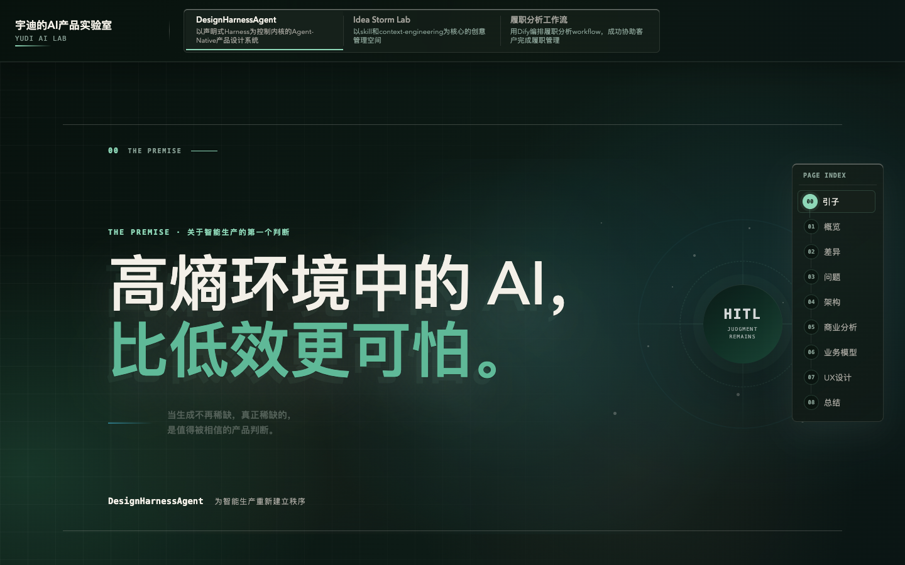

01
COLOR SYSTEM
夜幕极光
近黑绿正文面配青绿与深海蓝边缘光，测试暗色方案在叙事页、创意工具和高密度工作流中的一致性。02
COLOR SYSTEM
暮色档案
暖纸白、普鲁士蓝、朱砂与黄铜形成冷暖秩序，测试复杂内容里既专业又有作者感的上限。03
COLOR SYSTEM
YUDI AI LAB / COLORWAY DECISION SUITE
不再只看 DesignHarnessAgent。横向比较同一配色能否稳定覆盖长篇叙事、创意工作台和高密度工作流；纵向比较同一作品在三套色彩系统下的气质变化。
COLOR SYSTEM
COLOR SYSTEM
COLOR SYSTEM